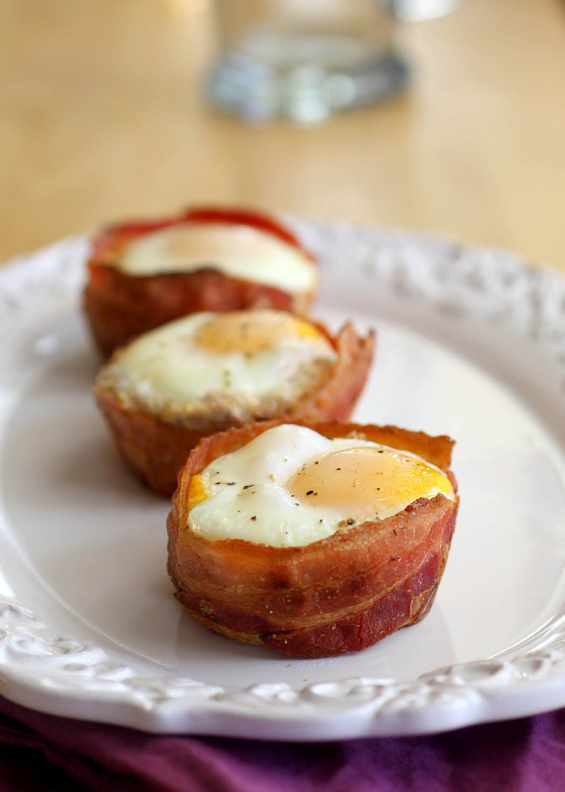

Eggs and bacon cupcakes

Description:
Potatoes, bacon and eggs unite in this all-in-one delicious breakfast cupcake.
Ingredients:
- 2 red potatoes, peeled and grated
- 2 bulbs shallots, chopped
- 6 slices bacon, chopped
- 1/2 cup grated Parmesan cheese
- 8 eggs, beaten
- 1 roma (plum) tomato, thinly sliced
- 1 avocado - peeled, pitted and sliced (optional)
Preparation:
- Preheat the oven to 350 degrees F (175 degrees C).
Grease a 12 cup muffin pan with cooking spray.
- In a large skillet, fry the bacon pieces over medium heat until browned and crisp,
about 8 minutes. Drain off half of the grease. Transfer the bacon and remaining
grease to a large bowl. Stir in the shredded potato, shallot and Parmesan cheese.
Divide this mixture evenly between the muffin cups. Pour eggs into each cup,
filling to the top.
- Bake in the preheated oven until the egg is firm, about 12 minutes.
Remove from the oven and set the dial to Broil. Place a slice of tomato
onto each cupcake and return to the oven. Broil for about 3 minutes, or
until toasted. Allow to cool slightly, then arrange the cupcakes on a
tray and top each one with a slice avocado, if using.